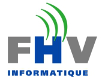

Data Engineer
FHVI · Lausanne · Aug. 2024 - Present
Maintenance and development of the operational data hub on SQL Server, in an on-premise environment.
- LLM: Led the LLM proof of concept.
- Ingestion: Architecture of the new ingestion solution.
- Cloud: Feasibility study of a migration to the cloud.
- Infrastructure: Administration of the backend and the virtual machines.
Data Engineer
Capgemini · Geneva · Nov. 2021 - Jul. 2024
Consultant / Senior Consultant
SAP financial reporting and planning for a European semiconductor leader.
- Leadership: Business analysis, specifications, team of 5 developers.
- ELT / SQL: Pipelines on SAP HANA Cloud and SQL optimisation.
- Modelling: KPIs, cost allocation and valuation of the production backward schedule.
- ML: Cost classification with SAP Data Intelligence and hana-ml.
Purchaser
Losinger Marazzi · Lausanne · Feb. 2016 - Dec. 2020
Procurement of building services (HVAC, plumbing, electrical), kitchens and floor coverings; innovation.